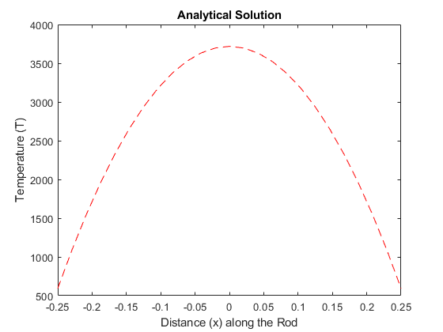
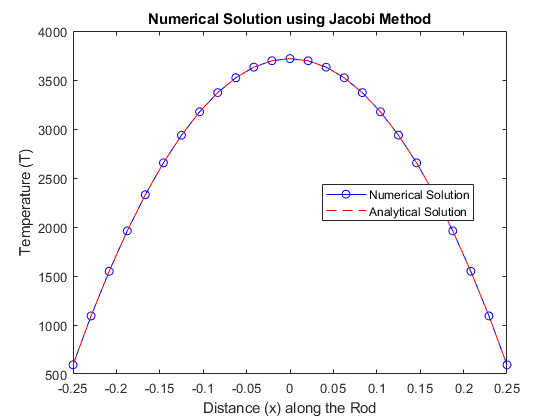
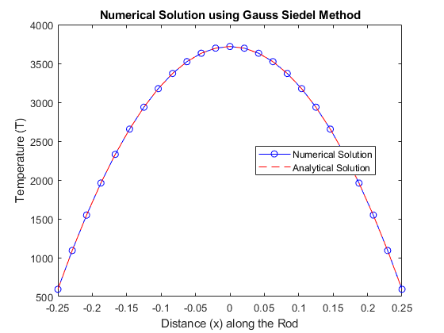
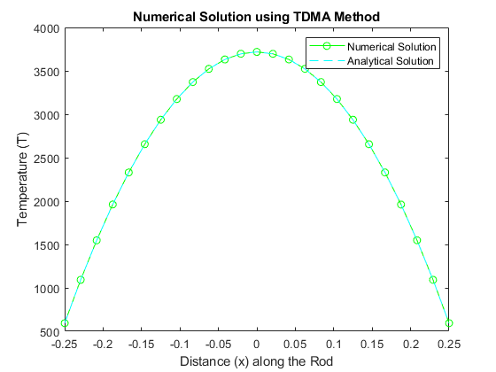
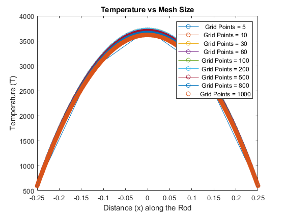

clc
clear all
L = 0.5/2;
q_dot = 50000;
T_ambient = 25;
h_conv = 22;
k = 0.5;
n = 25;
Starting_coordinate = -L;
Ending_coordinate = L;
h = (Ending_coordinate - Starting_coordinate) / (n - 1);
x = linspace(-L, L, n);
T_surf = T_ambient + q_dot * L / h_conv;
T_analytical = 0.5 * q_dot * (L^2) * (1 - (x.^2)/(L^2)) / k + T_surf;
figure;
plot(x, T_analytical, 'r--');
title('Analytical Solution');
ylabel('Temperature (T)');
xlabel('Distance (x) along the Rod');
T_j = zeros(n, 1);
C = (q_dot * (h^2)) / k;
T_j(1) = T_surf;
T_j(n) = T_surf;
T_old_j = T_j;
iterations = 0;
Error = 1;
Tolerance = 1e-3;
while Error > Tolerance
for i = 2:n-1
T_j(i) = 0.5 * (C + T_old_j(i-1) + T_old_j(i+1));
end
Error = max(abs(T_j - T_old_j));
T_old_j = T_j;
iterations = iterations + 1;
end
figure;
plot(x, T_j, 'b-o');
hold on;
plot(x, T_analytical, 'r--');
title("Numerical Solution using Jacobi Method");
ylabel("Temperature (T)");
xlabel("Distance (x) along the Rod");
legend(["Numerical Solution", "Analytical Solution"], 'Location', 'Best');
disp(['No. of Iterations in Jacobi Method: ', num2str(iterations)]);
T_j = zeros(n, 1);
C = (q_dot * (h^2)) / k;
T_j(1) = T_surf;
T_j(n) = T_surf;
T_old_j = T_j;
iterations = 0;
Error = 1;
Tolerance = 1e-3;
while Error > Tolerance
for i = 2:n-1
T_j(i) = 0.5 * (C + T_j(i-1) + T_old_j(i+1));
end
Error = max(abs(T_j - T_old_j));
T_old_j = T_j;
iterations = iterations + 1;
end
figure;
plot(x, T_j, 'b-o');
hold on;
plot(x, T_analytical, 'r--');
title("Numerical Solution using Gauss Siedel Method");
ylabel("Temperature (T)");
xlabel("Distance (x) along the Rod");
legend(["Numerical Solution", "Analytical Solution"], 'Location', 'Best');
disp(['No. of Iterations in Gauss Siedel Method: ', num2str(iterations)]);
T = zeros(n, 1);
T(1) = T_surf;
T(n) = T_surf;
P = zeros(n, 1);
Q = zeros(n, 1);
a = 2/h^2;
b = 1/h^2;
c = 1/h^2;
d = q_dot/k;
P(1) = 0;
Q(1) = T_surf;
for i = 2:n-1
P(i) = b / (a - c*P(i-1));
Q(i) = (d + c*Q(i-1)) / (a - c*P(i-1));
end
Q(n) = T(n);
for i = n-1:-1:2
T(i) = T(i+1)*P(i) + Q(i);
end
figure;
plot(x, T, 'g-o');
hold on;
plot(x, T_analytical, 'c--');
title('Numerical Solution using TDMA Method');
ylabel('Temperature (T)');
xlabel('Distance (x) along the Rod');
legend({'Numerical Solution', 'Analytical Solution'}, 'Location', 'northeast');
grid_points = [5, 10, 30, 60, 100, 200, 500, 800, 1000];
figure;
for m = grid_points
T_j = zeros(m, 1);
h = (Ending_coordinate - Starting_coordinate) / (m - 1);
C = (q_dot * (h^2)) / k;
T_j(1) = T_surf;
T_j(m) = T_surf;
T_old_j = T_j;
iterations = 0;
Error = 1;
Tolerance = 1e-3;
m
while Error > Tolerance
for i = 2:m-1
T_j(i) = 0.5 * (C + T_j(i-1) + T_old_j(i+1));
end
Error = max(abs(T_j - T_old_j));
T_old_j = T_j;
iterations = iterations + 1;
end
plot(linspace(-L, L, m), T_j, '-o');
hold on;
end
title("Temperature vs Mesh Size");
ylabel("Temperature (T)");
xlabel("Distance (x) along the Rod");
legend(cellstr(num2str(grid_points', 'Grid Points = %d')));
hold off;
No. of Iterations in Jacobi Method: 1237
No. of Iterations in Gauss Siedel Method: 649
m =
5
m =
10
m =
30
m =
60
m =
100
m =
200
m =
500
m =
800
m =
1000
    